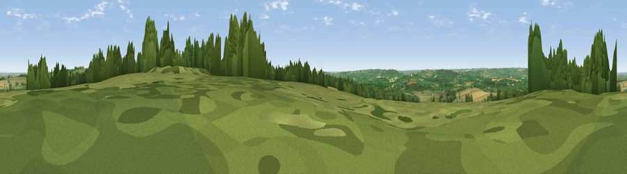

Viewpoint near Adlestrop
#15930 in England · top 36% of its area beats it · near AdlestropThe view, rendered

A 360° render of this exact spot computed from the terrain model, tree cover and land cover — summer colours, afternoon light, calibrated against photographs of famous viewpoints. Real trees, hedges and buildings will differ in detail.
The panorama
Grey silhouette: terrain skyline in each direction (720 bearings, Earth curvature and refraction included). Dashed green: skyline with trees (+15 m) and buildings (+8 m) as obstacles. Blue strip: how far the ground is visible on each bearing.
Where the view opens
Wedge length = distance to the farthest visible ground on that bearing (vegetation-aware). Rings at 10, 25 and 50 km.
What fills the view
44% grassland · 37% cropland · 18% woodland · 1% built-up
Angular shares of the visible panorama (visual magnitude), not map area. Landscape diversity 0.47 (0–1 Shannon).
Key numbers
More beautiful places nearby
The staircase of upgrades: each row has a higher view potential than everything closer. Driving times are estimates from straight-line distance, calibrated against real road routing — check an actual route before setting out.
| Place | Direction | Drive | Score |
|---|---|---|---|
| Viewpoint near Little Rollright | NE · 3 km | ~7 min | 58.7 |
| Viewpoint near Little Rollright | NE · 3 km | ~8 min | 63.5 |
| Viewpoint near Little Rollright | NE · 4 km | ~8 min | 64.2 |
| Viewpoint near Little Compton | NNE · 4 km | ~9 min | 67.2 |
| Viewpoint near Upper Brailes | NNE · 12 km | ~22 min | 68.5 |
| Viewpoint near Ilmington | NNW · 15 km | ~27 min | 72.6 |
| Broadway Hill | WNW · 16 km | ~29 min | 77.7 |
| Cleeve Hill | W · 27 km | ~43 min | 79.8 |
51.95238, -1.62855 · source: screening · position refined by local search. Computed location — check access rights before visiting.